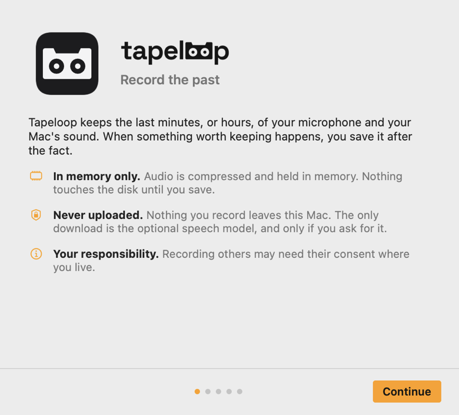
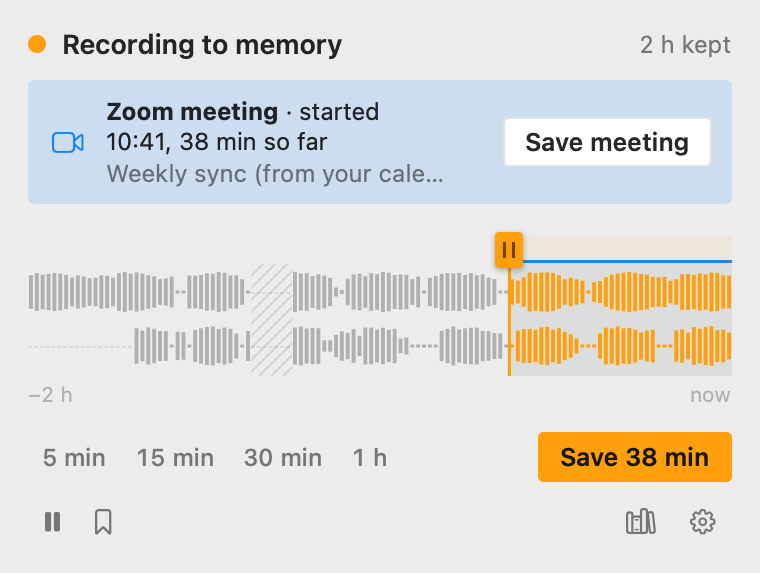
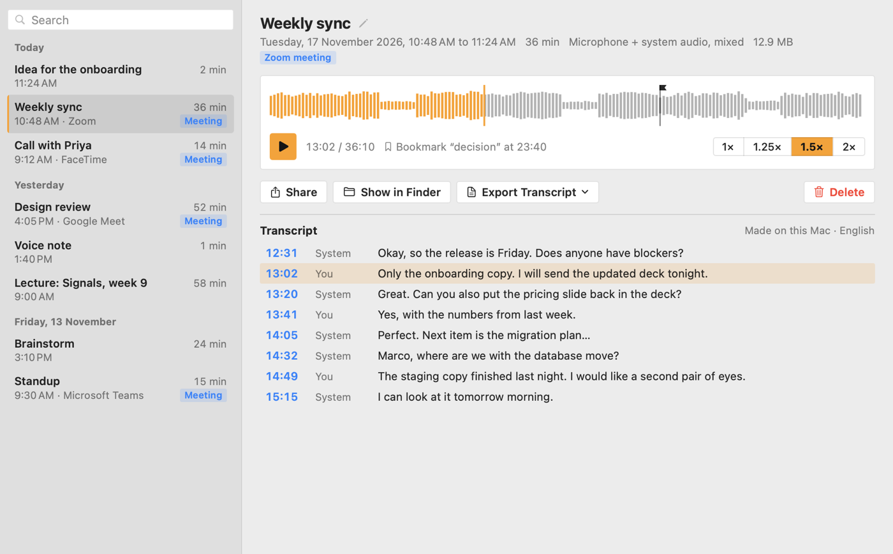
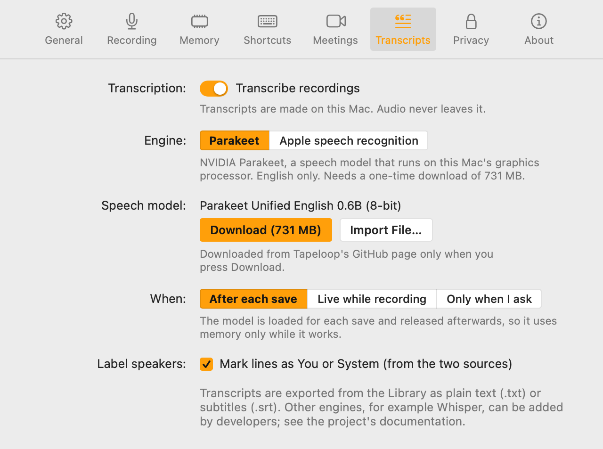
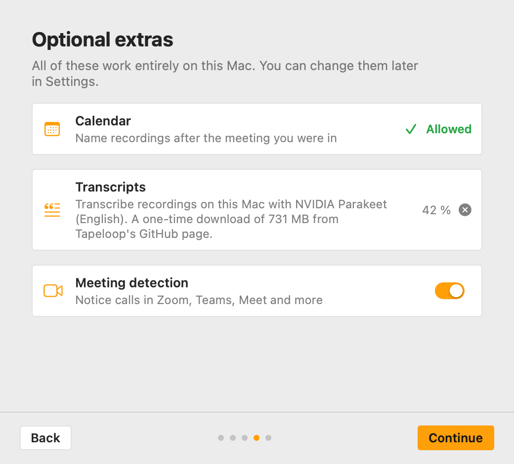
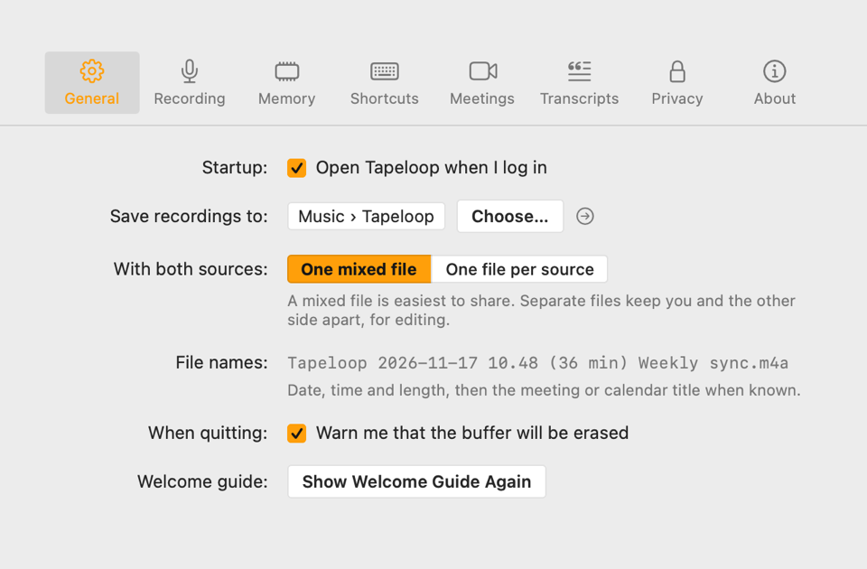
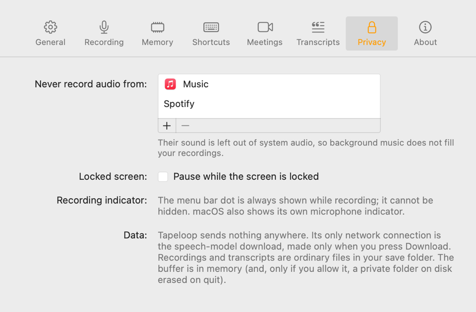

User guide: record the past, save what matters.
What Tapeloop does
Tapeloop records your microphone and your Mac's sound all the time, like an endless tape loop. It keeps only the most recent part, two hours by default, and quietly drops older audio as new audio arrives. When something worth keeping has already happened, such as a promise in a call, a lecturer's aside or an idea you said out loud, you rewind and save it.
- Two sources. "You" is your microphone. "System" is everything your Mac plays, for example the other side of a video call.
- In memory. The audio is compressed and held in your Mac's memory. At the standard quality, each source uses about 20 MB per hour, so two hours of both sources need about 89 MB.
- Gone when you quit. Quitting Tapeloop, restarting the Mac or a crash erases what was not saved. That is deliberate: nothing is kept that you did not choose to keep.
- Saved as ordinary files. A save is an
.m4aaudio file in your Music folder, underTapeloop. Any audio player can open it.
Recording other people may require their consent where you live. Check the rules that apply to you before you record calls or meetings.
Install and first run
- Download
Tapeloop-0.1.0.dmgfrom the project's Releases page, open it, and drag Tapeloop to the Applications folder. - Open Tapeloop. The first time, macOS blocks it because this version is not notarized by Apple. On macOS 14, right-click Tapeloop in Applications, choose Open, then Open again. On macOS 15 or later, try to open it once, then go to System Settings › Privacy & Security and click Open Anyway.
- A welcome guide with five steps opens. It explains what Tapeloop does and asks for permissions from its own window, so the macOS prompts appear in front of you.

| Step | What happens |
|---|---|
| 1. Welcome | What Tapeloop keeps, and the three promises: in memory only, never uploaded, your responsibility. |
| 2. Your microphone | Click Allow…; macOS asks for the Microphone permission. |
| 3. Your Mac's sound | Click Allow…; macOS asks for System Audio Recording. You can skip this and record only the microphone. Screen Recording is not needed. |
| 4. Optional extras | Calendar (to name recordings after your meetings), a Download button for the speech model used for transcripts, and a switch for meeting detection. Nothing is downloaded unless you click Download; when the download finishes, transcription is turned on. Allowing Calendar does not turn calendar titles on: switch them on in Settings › Meetings. |
| 5. You are all set | The global shortcuts, and "Open Tapeloop when I log in" (on by default). Click Done to start recording. |
Until you finish the guide, clicking the cassette in the menu bar brings the guide back to the front. You can see the guide again later from Settings › General › Show Welcome Guide Again.
While the guide, Settings or the Library is open, Tapeloop also shows in the Dock and in the app switcher (⌘Tab), with its own menus at the top of the screen. When you close the last of these windows, it goes back to living in the menu bar only.
Saving
From the popover
- Drag the amber handle to the left to go further back, or choose a quick span (the last 5, 15 or 30 minutes or the last hour) from the ••• menu. A span longer than what Tapeloop has kept is greyed out.
- To keep only a meeting, click its line or name under the tape: both ends move to the meeting. To end the span before now, move the pointer to the right end of the tape and drag the second handle that appears.
- Optionally, click the play button on top of the handle to listen first. Nothing is saved; the part already played turns red. Click again, move the handle or close the popover to stop.
- Click Save, or press Return.
A long save shows a progress bar with Cancel. When it is done, a notification says "Saved" with two buttons: Play opens the recording in the Library and plays it, and Show in Finder shows the file.
From anywhere
- Press ⌃⌥S (Control-Option-S) to save the last 5 minutes. You can change the length and the keys in Settings › Shortcuts.
- Right-click the menu bar icon and choose Save Last 5 Minutes, 15 or 30 minutes, or Save Last Hour.
Where files go and how they are named
Recordings go to Music › Tapeloop in your home folder unless you choose another folder in
Settings › General. A file is named after its start, its length and, when known, the meeting, for example
Tapeloop 2026-11-17 10.48 (36 min) Weekly sync.m4a. A second file with the same name gets " 2"
added, so nothing is overwritten.
When both sources are on, Settings › General lets you choose One mixed file (easiest to share) or One file per source, which writes "… - Microphone.m4a" and "… - System audio.m4a" so you can edit the two sides separately.
Before you quit
Quitting erases what Tapeloop is keeping. If it holds more than a minute, Tapeloop asks first and offers Save Last … and Quit (up to the last 30 minutes), Quit or Cancel. Tick "Do not ask again" to stop the question, or turn it back on in Settings › General.
Bookmarks
A bookmark marks a moment so you can find it later.
- In the popover, choose Bookmark This Moment from the ••• menu. A field appears; type a label such as "idea" and press Return, or leave it empty.
- From any app, press ⌃⌥B. A notification confirms the time.
- From the right-click menu, choose Bookmark Moment.
Bookmarks appear as flags on the timeline. A save keeps the bookmarks inside its span, and the Library's player can jump to them. Bookmarks that are older than what Tapeloop keeps disappear with the audio. You can only add a bookmark while Tapeloop is recording.
Pausing and gaps
- Choose Pause Recording from the popover's ••• menu, press ⌃⌥P, or use the right-click menu. What Tapeloop already keeps stays; nothing new is recorded until you resume.
- Tapeloop always pauses while the Mac sleeps.
- If you turn on "Pause while the screen is locked" (Settings › Recording or Privacy), it also pauses while the screen is locked.
Every pause shows as a hatched gap on the timeline. A save across a gap simply skips the time when nothing was recorded. If you plug in a headset or switch your sound to other headphones, recording restarts by itself, which can leave a very short gap.
Meetings and your calendar
Tapeloop notices calls without any extra permission. When a known call app has used your microphone for about 5 seconds, a meeting starts: a blue band appears on the timeline and the popover shows a banner with Save meeting. The meeting ends about 10 seconds after the app stops using the microphone, so a short mute does not split it.

Recognised apps: Zoom, Microsoft Teams, FaceTime, Slack huddles, Webex, Discord, Skype, WhatsApp, Telegram, Signal, and calls in Chrome, Safari, Arc, Firefox, Edge and Brave (for example Google Meet). Meeting detection needs macOS 14.2 or later.
When a meeting of at least one minute ends, Tapeloop sends a notification "The … meeting ended" with Save meeting and Not now. In Settings › Meetings you can instead save every meeting automatically, turn off the offer, hide the blue bands, or turn detection off. You can also save a meeting from the right-click menu (Save Current Meeting or Save Last Meeting).
Calendar titles
Turn on Use calendar event titles in Settings › Meetings and allow access to your calendars. Tapeloop then names a meeting, and the recording you save from it, after the calendar event that overlaps it the most. You can choose which calendars to use; with none picked, all are used. All-day events are never used.
The Library
Open the Library from the popover, the right-click menu, or ⌘L while a Tapeloop window is open.

- List: recordings grouped by day (Today, Yesterday, then dates), newest first, with their length and a Meeting tag when they came from one. Use ↑ and ↓ to move through them.
- Search: type in the search field to find recordings by name, meeting app, calendar title, bookmark label or any word in a transcript. Every word you type must match; capital letters and accents do not matter.
- Player: click the waveform to jump, press Space to play or pause, click the bookmark button to jump to the next bookmark, and choose 1×, 1.25×, 1.5× or 2× speed.
- Rename: click the pencil next to the title, or press Return. The file is renamed to match.
- Share sends the audio file with AirDrop, Mail, Messages and more. Show in Finder reveals it.
- Delete (or the Delete key) asks first, then moves the audio file to the Trash. Its transcript and bookmarks are deleted.
The Library shows every .m4a file in your save folder, including ones you put there yourself, and
it updates when you add, remove or rename files in Finder.
Transcripts
Tapeloop can turn recordings into text on your Mac. The audio is never sent anywhere. You can choose between two speech engines in Settings › Transcripts:
- Parakeet (the default): NVIDIA's Parakeet speech model, which runs on your Mac's graphics processor. It recognises English only and needs a one-time download of 731 MB.
- Apple speech recognition: built into macOS. It recognises many languages, needs the Speech Recognition permission, and downloads nothing.

Get the speech model
Tapeloop downloads nothing until you ask. To use Parakeet, download its speech model in either of these places:
- In the welcome guide, step 4 (Optional extras), click Download in the Transcripts row.
- In Settings › Transcripts, with Engine set to Parakeet, click Download (731 MB) in the Speech model row.

While it downloads, you see how far it has got; Cancel (or the ✕ in the welcome guide) stops it. When the file has arrived, Tapeloop checks that it is exactly the expected file and then shows Installed. When a download you started finishes, Tapeloop turns transcription on with Parakeet.
The model comes from Tapeloop's own page on GitHub. This download is the only time Tapeloop connects to the internet, and it happens only when you click Download or Try Again.
If the download fails, the row says why; click Try Again. If you already have the model file,
parakeet-unified-en-0.6b-Q8_0.gguf (for example copied from another Mac), click Import
File… and choose it. A file that is not exactly the right one is refused.
When to transcribe
Choose under When in Settings › Transcripts:
| Choice | What happens |
|---|---|
| After each save (default) | Each recording is transcribed right after you save it. The speech model is loaded for the job and released afterwards, so it uses memory only while it works. On an Apple M2, an 8-second recording takes about 1 to 1.5 seconds. |
| Live while recording (Parakeet only) | Tapeloop transcribes your audio as it records and keeps the text in memory beside the audio, so a save has its transcript at once. The text is forgotten when the audio it belongs to drops out of the buffer. A save that reaches back to before you chose live mode is transcribed after the save instead. |
| Only when I ask | Nothing is transcribed by itself. Open a recording in the Library and click Transcribe. |
Live mode uses memory. While live mode is on, the speech model stays loaded the whole time Tapeloop records. That takes about 0.8 GB of memory and keeps the graphics processor busy whenever there is sound. On a Mac with little memory, choose After each save.
Reading and exporting transcripts
When a transcript is ready, a notification shows its word count; Open shows it in the Library. Each line has a time; click it to play from there. The line being played is highlighted.
With Label speakers on, lines are marked You (your microphone) or System (your Mac's sound). This works for recordings transcribed when they are saved, whether after the save or live. A mixed recording transcribed later from the Library has no labels, because the two sides are no longer separate.
To keep a transcript as a file, click Export Transcript and choose Plain Text (.txt), with a time before each line, or Subtitles (.srt) for video players.
Using Apple speech recognition instead
Choose Apple's engine for a language other than English, or if you do not want to download the model.
- In Settings › Transcripts, set Engine to Apple speech recognition.
- Allow Speech Recognition when macOS asks, or click the button in the Permission row.
- Choose a language, or keep "The system language". Only languages your Mac can recognise without a network connection are listed, and Tapeloop never uses Apple's servers.
Apple's engine offers After each save and Only when I ask, but not live mode. Its quality depends on Apple's speech models for your language. A word that falls exactly on a 55-second boundary may be misheard.
Deleting the speech model
In Settings › Transcripts, click Delete… in the Speech model row and confirm. This frees 731 MB of disk space. Transcripts you already have are kept. Transcription with Parakeet stops until you download the model again; to keep transcribing, switch the engine to Apple speech recognition.
Settings
Open Settings from the popover's gear button, the right-click menu, or ⌘, while a Tapeloop window is open. Changes take effect at once.

| Tab | What you can set |
|---|---|
| General | Open at login; the save folder; one mixed file or one file per source; the warning when quitting; show the welcome guide again. |
| Recording | Turn the microphone and the system audio on or off; pick a microphone (or follow the system default); live level meters; quality (32, 48, 64 or 96 kbps per source); pause while the screen is locked. |
| Memory | How much to keep (15 min to 5 h, or a custom length from 10 min to 12 h); memory used now and when full; the memory limit (100 MB to 2 GB, 500 MB by default); whether to use disk beyond the limit; Erase Buffer Now…. |
| Shortcuts | Save the last N minutes (1 to 60), bookmark, pause or resume, open the popover. Click a shortcut and press new keys, Escape to cancel, or Delete to clear it. |
| Meetings | Meeting detection; offer to save or save automatically when a meeting ends; blue bands on the timeline; calendar titles and which calendars to use. |
| Transcripts | Transcription on or off; the engine (Parakeet or Apple speech recognition); the speech model (download, import, delete); when to transcribe (after each save, live while recording, or only when you ask); the language (Apple's engine only); speaker labels. |
| Privacy | Apps whose sound is never recorded; pause while the screen is locked; what Tapeloop stores. |
| About | Version, and links to the project, issues, the MIT licence and the third-party notices (the transcription engine transcribe.cpp and the NVIDIA Parakeet model). |
Memory and disk
If the length you choose does not fit in the memory limit, Tapeloop asks whether to keep the older part on disk or to keep only what fits in memory. If you allow disk, the older part is kept in a private folder that Tapeloop erases when it quits and when it starts again. If you do not, the buffer is shortened, and Settings › Memory says so. If macOS runs low on memory, Tapeloop shortens the buffer, oldest audio first, rather than slowing your Mac down.
Privacy
- Nothing leaves your Mac. Your audio, recordings and transcripts are never uploaded. There is no account, no analytics and no update check.
- One download, only when you ask. Tapeloop connects to the internet for one thing: downloading the speech model for transcripts, and only when you click Download. It fetches that one file from Tapeloop's own page on GitHub and uses it only if it is exactly the expected file. If you never download the model, Tapeloop makes no network connections. The project's automated build fails if network code is added anywhere else.
- Memory first. Nothing is written to disk until you save, unless you allow disk use for long buffers. That folder is erased on quit.
- Plain files. Saved recordings are ordinary audio files. Titles, bookmarks, meeting names and
transcripts are kept in a hidden
.tapeloopfolder inside your save folder. - Leave apps out. In Settings › Privacy, add apps such as Music or Spotify under "Never record audio from". Their sound is left out of the system audio.
- Always visible. The menu bar icon always shows when Tapeloop is recording, and macOS shows its own microphone indicator.

Troubleshooting
- The icon has a red ring, or the popover says "Your microphone is not being recorded".
- Tapeloop does not have the Microphone permission. Click Open System Settings in the popover, or go to System Settings › Privacy & Security › Microphone, and turn on Tapeloop. If you only want your Mac's sound, click Record system audio only.
- Saved files have no sound from the other side of a call.
- Tapeloop probably does not have System Audio Recording. Go to System Settings › Privacy & Security › Screen & System Audio Recording, find the "System Audio Recording Only" list, and turn on Tapeloop. macOS gives Tapeloop silence, not an error, when this is off, so Settings shows "Asked" rather than "Allowed" until Tapeloop has heard sound from your Mac. Also check that the app is not in Settings › Privacy › "Never record audio from".
- "System audio is not being recorded … needs macOS 14.2 or later".
- Your Mac runs macOS 14.0 or 14.1. Update macOS, or click Record microphone only.
- A notification says "Nothing to save yet".
- Tapeloop has no audio in the span you asked for. This happens right after it starts, after you paused, or when both sources are off. Check that the icon shows the amber dot and wait a moment.
- macOS asks for the permissions again after an update.
- This version is signed in a way that makes macOS treat each update as a new app. Allow the permissions again. If a switch in System Settings is already on but Tapeloop still cannot record, quit Tapeloop, turn the switch off and on again, and open Tapeloop. If that does not help, ask whoever manages your Mac to reset Tapeloop's permissions (the admin guide explains how), then allow them again.
- A shortcut does nothing.
- Another app probably uses the same keys. Settings › Shortcuts says "Another app already uses this shortcut"; choose a different one.
- A call was not detected as a meeting.
- Check that meeting detection is on in Settings › Meetings and that your Mac runs macOS 14.2 or later. The call app must be one of the recognised apps and must be using your microphone for at least 5 seconds. You can always save the span by hand.
- A saved recording got no transcript.
- Check Settings › Transcripts: Transcribe recordings must be on, and When must not be "Only when I ask". With Parakeet, the Speech model row must say Installed; if it offers Download, the model is missing. You can always open the recording in the Library and click Transcribe.
- The speech model download fails.
- Check your internet connection and click Try Again. A network at work may block downloads
from GitHub; ask whoever manages it (the admin guide lists the addresses). If you can get the file
parakeet-unified-en-0.6b-Q8_0.ggufanother way, use Import File…. - Tapeloop uses almost a gigabyte of memory.
- That is the speech model in live mode, which stays loaded while Tapeloop records. Choose After each save in Settings › Transcripts; the model is then loaded only while a transcript is made.
- Transcription with Apple's engine fails or a language is missing.
- Apple's engine only uses speech recognition that runs on your Mac. If your language has no on-device model, it is not listed and Tapeloop says so. Also check System Settings › Privacy & Security › Speech Recognition.
- "Open Tapeloop when I log in" does not stick.
- Move Tapeloop to the Applications folder, open it from there, and turn the option on again. You can also check System Settings › General › Login Items.
- Tapeloop appears in the Dock.
- That is normal while the welcome guide, Settings or the Library is open. It leaves the Dock when you close them.
- I cannot find the welcome guide window.
- Click the cassette in the menu bar. Until setup is finished, that brings the guide to the front.